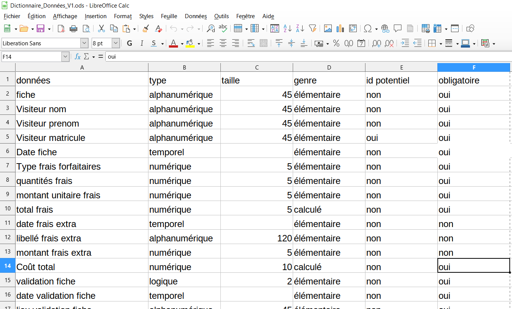
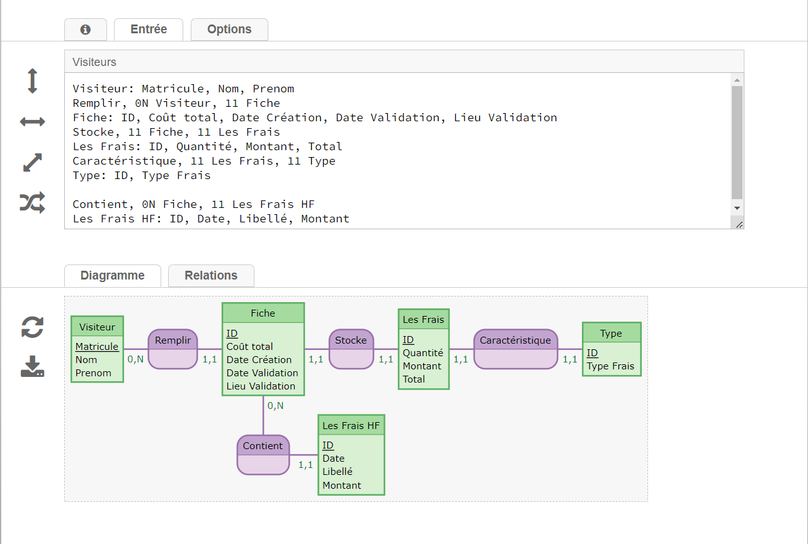
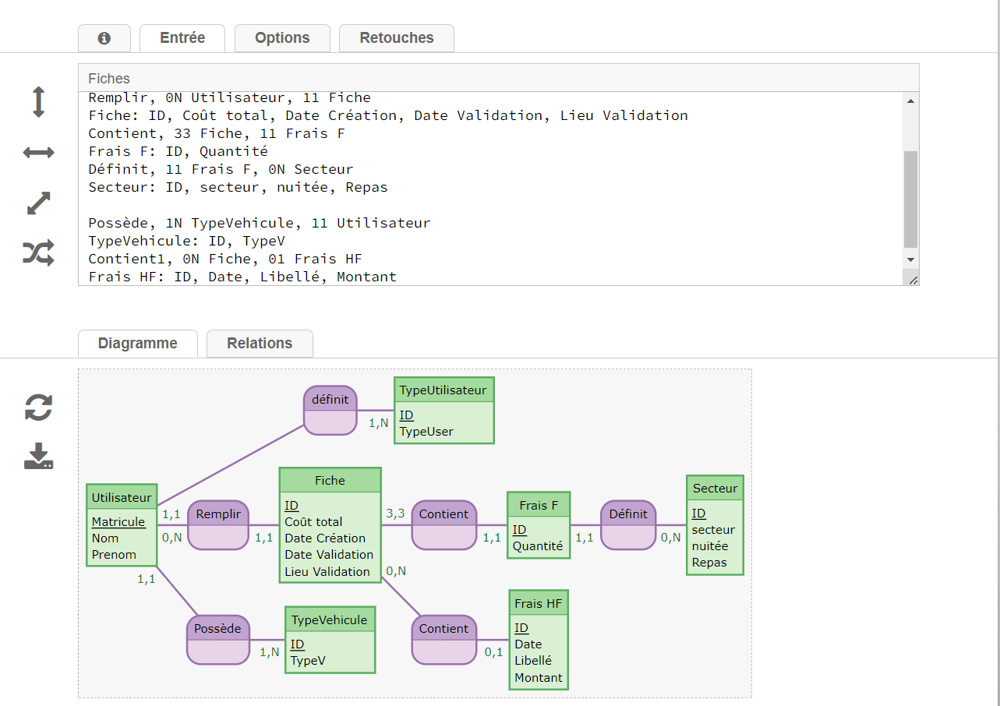
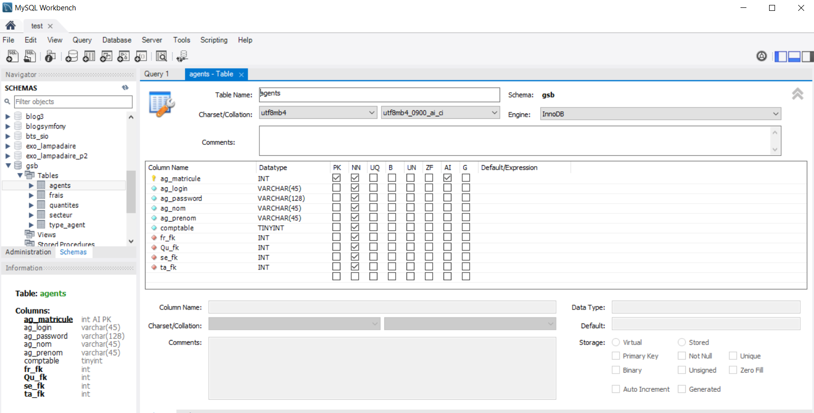

AP2: L'application de gestion de remboursement
Résumé du Contexte
Une entreprise nommé Galaxy envoie des salariés effectuer des visites dans des centre médicaux afin de mettre à jour les connaissances sur le pesonnel médicale et les produits utilisés. Ces visites sont remboursé par l’entreprise, qui souhaite avoir une application qui permettrai d’uniformiser le suivit des visites. Ainsi nous avons eu pour mission de réaliser moi et trois autres camarades l'application en respectant le cahier des charges.
L'objectifs de l'application en détail
L’application doit permettre à un utilisateur de s’identifier avec un login et un mot de passe. Un utilisateur peut avoir deux rôles différents (sans avoir les deux en même temps): Visiteur et Comptable.
- - Les visiteurs peuvent remplir des fiches de remboursement et leurs valeurs, c'est à dire le nombre de nuitée, de repas pris pendant la visite qu'il à effectué. Il peut également ajouter dans sa fiche des remboursement extra pour lequel il devra définir le nom et le montant lui même.
- - Les comptables peuvent analyser les fiches de remboursement remplie par les visiteurs afin de les valider pour que celle-ci puisse être archivé et que l’entreprise puisse prendre en charge le remboursement. Il pourront également valider ou non les remboursement extra définit par le visiteur sur sa fiche.
L'organisation
Afin de pouvoir effectuer le travail comme convenu et gagner du temps, nous avons divisé le groupe en deux parties distinctes mais complémentaires:
- - Un duo me comptant réalisant la structure de la base de donnée et tout ce qu'elle comprend ainsi que la documentation du travail.
- - Un autre duo en charge de comprendre le fonctionnement de SceneBuilder et d'établir le programme en Java pour le relier à la BDD.
Nous avons également tenu un Trello pour nous organiser et définir les missions de chacuns dans le groupe en tenant compte du temps qu'il nous restaient pour terminer le projet.
La réalisation de ma mission: La conception de la base de données
Afin que l'application puisse stocker et récupérer les données dont elle a besoin pour fonctionner correctement, il faut impérativement avoir une bonne basse de données structurées correctement. La réaliser est donc la mission que j'ai pris à coeur pour permettre à l'application de fonctionner.
Première étape: Réalisation du Dictionnaire de données
Avant même de réfléchir à la structure de la base de donnée, il faut impérativement réaliser le Dictionnaire de données pour répertorier la totalité des données qui seront utilisés. Il faut également définir toute les caractéristiques de ces données à savoir:
- - Son type
- - Sa taille (nombre de charactères)
- - Son genre (élémentaire ou caclulé selon si la donnée est calculé au sein l'application ou non)
- - La possibilité ou non de servir d'identifiant
- - L'obligation ou non d'exister pour certaines données
Voici un extrait du dictionnaire de donnée de l'application:
Seconde étape: Réalisation du MCD
Après avoir correctement rédigé les différentes données, il faut réaliser le MCD. Le MCD est un schéma qui permet d'avoir une vision ordonnée de la structure de la base de donnée lors qu'elle est établi. Il faut donc déterminer les différentes entités qui seront les tables dans la BDD qui contiennent les différentes données qui seront les champs dans la BDD.
Le MCD, comme le dictionnaire de donnée avant lui, est régulièrement mis à jour avec l'arrivée des nouvelles fonctionnalités à ajouté ou contraintes rencontrés. Afin de réaliser le MCD, j'utilise le site internet mocodo.net
Voici la dernière version du MCD pour la dernière version de l'application:
Dernière étape: La construction de la BDD
Maintenant que tout à été plannifié, il ne reste plus qu'à créer la bdd en se fiant au schéma réalisé. Afin de réaliser la BDD j'utilise Wamp pour l'héberger localement sur ma machine et MySQL Workbench pour la réaliser. Le plus important dans la création est de bien faire correspondre les champs avec la bonne table et de réaliser les contraintes de clés étrangères en fonction des cardinalités réalisés précédemment dans le MCD.
Réalisation de la BDD avec Workbench:
